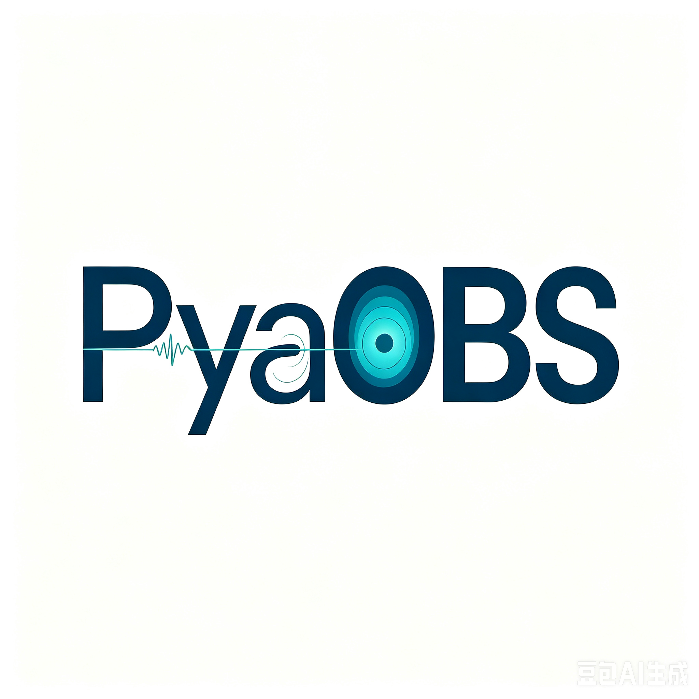

Welcome to pyAOBS’s documentation!
{kind=link}

pyAOBS (Python Active-source Ocean Bottom Seismology) is a toolkit for active-source OBS workflows: data conversion, phase picking, traveltime tomography, velocity-model interpretation, lithology classification, and KKHS02 / LIP petrology constraints — with a unified Workbench and standalone GUIs / APIs.
Release |
|
|---|---|
Repository |
|
Changelog |
https://github.com/go223-pyAOBS/pyAOBS/blob/main/CHANGELOG.md |
GitHub README |
Full Chinese feature guide on the repository home page |
Note
The authoritative, complete feature description lives in the repository
root README.md (shown on the GitHub home page). This documentation site
summarizes the same scope and points to subpackage manuals.
What is included
Module |
Purpose |
Main entry |
|---|---|---|
Workbench |
Project shell: runs, history, batch rerun |
|
idata |
OBS format conversion (RAW / OBEM / SAC / SEGY) |
Workbench |
zplotpy |
Phase picking / section viewer |
|
tomo2d |
Traveltime forward / inversion |
|
imodel |
Velocity-model interpretation (Qt) |
|
iphase |
|
|
model_building |
Zelt |
Python API |
petrology |
KKHS02 melting / H–Vp / ΔVp / invert |
|
utils |
Rock database & Vp→lithology |
|
field |
OBS station layout / recovery paths |
|
Recommended OBS workflow
data.gui → zplotpy.gui → tomo2d → imodel.gui → iphase.gui → (optional) petrology.lip.gui